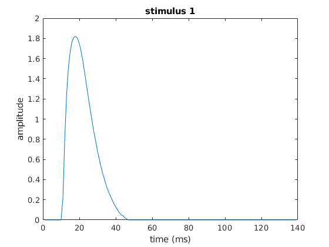
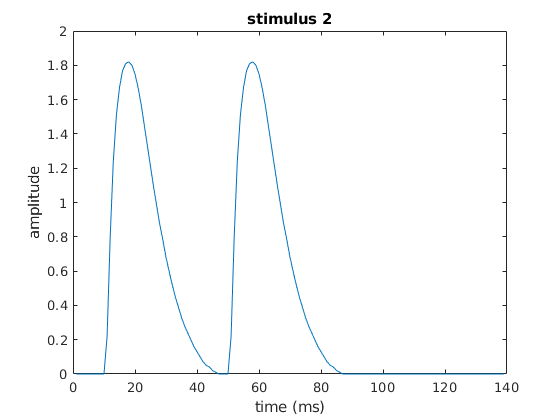
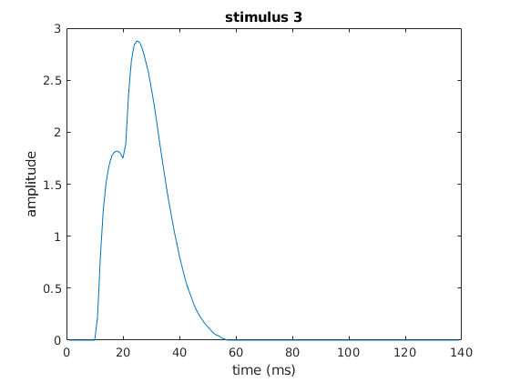
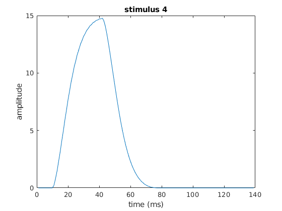
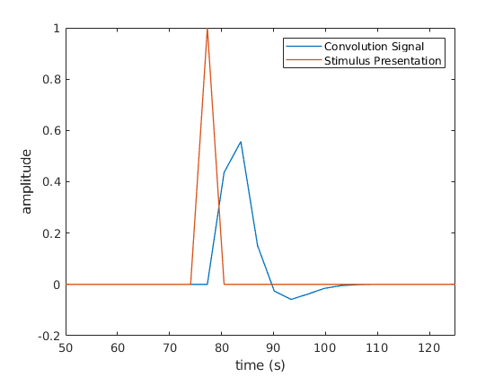
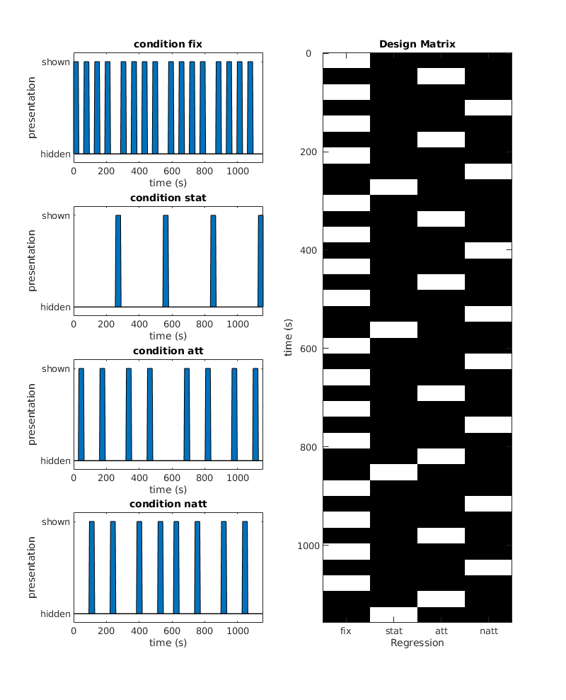
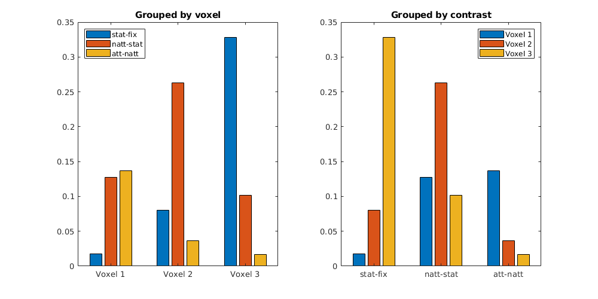

Assignment 5 - Dimitar Dimitrov - s1018291
5.1 convolution
5.1
load('twitch.mat');
5.1 - a)
stim1 = zeros(1,100); stim1(10) = 1;
5.1 - b) - CODE
c = conv(stim1, twitch); time = 1:length(c);
5.1 - b) - ANSWER
I think it is (stimulus + twitch - 1) because the moment of excitation coincides
5.1 - c)
plot(time, c); xlabel('time (ms)'); ylabel('amplitude'); title('stimulus 1');
5.1 - d)
stim2 = stim1; stim2(50) = 1;
5.1 - e)
c2 = conv(stim2, twitch); plot(time, c2); xlabel('time (ms)'); ylabel('amplitude'); title('stimulus 2');
5.1 - f)
stim3 = stim1; stim3(20) = 1; c3 = conv(stim3, twitch); plot(time, c3); xlabel('time (ms)'); ylabel('amplitude'); title('stimulus 3');
5.1 - g)
they add up together to form an even bigger excitation it will spasm/contract harder
5.1 - h)
stim4 = zeros(1,100); targets = 10:2:40; stim4(targets) = 1; c4 = conv(stim4, twitch); plot(time, c4); xlabel('time (ms)'); ylabel('amplitude'); title('stimulus 4');
5.1 - h) answer
it looks like a single huge spike with long build-up, which meets my expectations
6.4 regression
6.4 load data
load('alcohol.mat');
6.4 expectations
i expect to find a positive correlation because a young brain is more mallible and susceptable to manipulation by advertisement (citations needed)
6.4 plot data
scatter(reclametijd, alcoholconsumptie); xlabel('advertisement duration (min)'); ylabel('alcohol consumption by adolescents (dl)'); title([{'relationship between alcohol consumption'}, {'of adolescents and advertisement duration'}]);
6.4 regression
[R,p] = corrcoef(reclametijd, alcoholconsumptie); beta = polyfit(reclametijd, alcoholconsumptie, 1);
6.4 verify they are significantly correlated
p < 0.05 therefore the findings are significant and the null hypothesis (no correlation) can be rejected
6.4 plot residuals
alcoholfit = polyval(beta, reclametijd); res = alcoholconsumptie - alcoholfit; scatter(reclametijd, res, 'k'); xlabel('advertisement time (minutes)'); ylabel('residuals'); title('Residuals plot of alcohol consumption and advertisement time')
6.4 plot residuals - answer
the residuals vary between a relatively tight domain [-3;3], so there is indeed a linear relationship
6.4 predict 15 minutes
slope = beta(1); intercept = beta(2); prediction15 = 15*slope + intercept;
6.4 predict 15 minutes conclusion
prediction15 = 4.3533, so we expect an adolescent to drink 4.3533 dl of alcohol on average after having watched 15 minutes of alcohol adverts
6.4 draw regression line
scatter(reclametijd, alcoholconsumptie, "DisplayName", "data points"); xlabel('advertisement duration (min)'); ylabel('alcohol consumption by adolescents (dl)'); title([{'relationship between alcohol consumption'}, {'of adolescents and advertisement duration'}]); hold on; plot(reclametijd, alcoholfit, 'r-', "DisplayName", "regression line"); legend;
6.4 brief recommendation
since the regression line shows a positive relationship between advertisement time and alcohol consumption amongst adolescents I would recommend the government limit the time alcohol ads can run or ban them
6.4 function
function [slope, intercept, sqRes] = lin_regression(x, y) % function [slope, intercept] = lin_regression(x, y) % takes two vectors, performs linear regression on them, returns the % resulting slope, intercept and sum of squared residuals returned % and plots the original data with the regression line as well as the % residuals graph [R,p] = corrcoef(x, y); beta = polyfit(x, y, 1); slope = beta(1); intercept = beta(2); yfit = polyval(beta, x); res = y - yfit; sqRes = sum(res.^2); subplot(2,1,1); scatter(x,y, 'DisplayName', 'data points'); hold on; plot(x, yfit, 'r-', 'DisplayName', 'regression line'); title([{'original data + regression line'}, {strcat('correlation coeficient = ', num2str(R(1,2)))}, {strcat('p = ', num2str(p(1,2)))}]); xlabel('1st variable'); ylabel('2nd variable'); legend; subplot(2,1,2); scatter(x, res); title('residuals of the data'); xlabel('1st variable'); ylabel('residuals of 2nd variable'); set(gcf,'position',[10,10,400,800]); hold off
6.5 multiple regression
6.5
load('testresult.mat')
6.5 - a)
dependent variable: test score predictive variables: everything else (so study duration, coffee, ADHD medication intake, placebo drink units)
Personally, I think Study Time will show effect.
6.5 - b)
D = [ones(100,1), ADHDmedicijn, Koffie, Placebo, Studietijd];
6.5 - c)
[B, BINT] = regress(Testscore, D);
6.5 - d) - CODE
disp(BINT);
0.0172 1.3764
-0.0907 0.1236
-0.0867 0.0568
-0.0700 0.0778
0.1569 0.1846
6.5 - d) - ANSWER
only study time's confidence interval doesn't contain 0, so it is the only significant predictor/influencer
(the ones vector also returned an interval without 0 but that's not a predictor)
since placebo's confidence interval contains 0, there probably was no placebo effect taking place
6.5 - e) - CODE
disp(B(5)); disp(1/B(5)); disp(strcat( num2str(floor(1/B(5))), " hours and ", num2str( round( 60* (1/B(5)-floor(1/B(5)) ) )) , " minutes" ));
0.1708
5.8560
5 hours and 51 minutes
6.5 - e - answer
Test Score = Variable * Variable's Regression Coefficient
The Regression Coefficient of Study Time is equal to 0.1708 (given by B(5))
therefore 1 Test Point = Study Time for 1 point * 0.1708
Study Time for 1 point = 5.8560 hrs
around 5 hours and 51 minutes of studying are needed to get an extra point on the test
6.6 FMRI
6.6A
load('exercise_fMRI_small.mat');
6.6B
6.6B - a)
s1 = zeros(1,50); s1(25) = 1;
6.6B - b)
c1 = conv(s1, hrf);
6.6B - c)
c1t = 0:3.22: 3.22*(length(c1)-1); s1t = 0:3.22: 3.22*(length(s1)-1); plot(c1t, c1, 'DisplayName', 'Convolution Signal', 'LineWidth', 1); hold on; plot(s1t, s1, 'DisplayName', 'Stimulus Presentation', 'LineWidth', 1 ); legend xlabel('time (s)'); xlim([50 125]); ylabel('amplitude');
6.6B - d)
the new graph isn't as smooth and doesn't reach as high as the one in 6.2B, probably the result of convolution with a different HRF vector
6.6B - e)
the signal spike happens about 6.5 seconds after the stimulus, and it is returned to baseline level at 109.48 seconds, about 29 seconds after its onset
6.6C
6.6C - a)
nrscans = length(bold); D = []; conditions = ["fix", "stat", "att", "natt"]; for condition = conditions con_idx = eval(condition); condition_stimuli = zeros(nrscans, 1); % make a zeros vector condition_stimuli(con_idx) = 1; % populate zeros vector with index of stimulus presentation D = [D condition_stimuli]; end
6.6C - b)
time = 0:3.22: 3.22*(length(bold) -1); subplot(4,2,2:2:8); imagesc(D); colormap gray; title('Design Matrix'); actual_time = 3.22 * size(D,1); ytick = 1 : 200/3.22 : actual_time; yticklabels = 0 : 200 : 200 * ceil( actual_time /200); set(gca, 'YTick', ytick, 'YTickLabel', yticklabels); set(gca, 'XTick', [1 2 3 4], 'XTickLabel', conditions); ylabel('time (s)'); xlabel('Regression'); idx = 1; for i=1:2:7 subplot(4,2,i); area(time, D(:,idx)); ylim([-0.1 1.1]); xlim([0 time(end)]); title(strcat("condition ", conditions(idx))); xlabel('time (s)'); ylabel('presentation'); set(gca, 'YTick', [0, 1], 'YTickLabel', ["hidden", "shown"]); idx = idx + 1; end subplot(4,2,3); set(gcf,'position',[10,10,800,1000]); shg;
6.6C - c)
condition:
- fix : 16 times
- stat : 4 times
- att : 8 times
- natt : 8 times
fixed order:
- there is a fix (fixation point probably) between every stimulus except before stat
- in the first half it goes [att-natt-att-natt-stat] x2
- in the second half it goes [natt-att-natt-att-stat] x2
each stimulus was presented for about 10 scans, each scan takes 3.22 seconds which means each stimulus presentation lasted about 32.2 seconds
6.6C - d)
DHRF = conv2(hrf, D);
6.6C - e) - CODE
subplot(4,2,2:2:8); imagesc(DHRF); colormap gray; actual_duration_HRF = 3.22 * size(DHRF,1); ytick = 1 : 200/3.22 : actual_duration_HRF; yticklabels = 0 : 200 : 200 * ceil( actual_duration_HRF /200); set(gca, 'YTick', ytick, 'YTickLabel', yticklabels); set(gca, 'XTick', [1 2 3 4], 'XTickLabel', conditions); title('Design Matrix HRF'); ylabel('time (s)'); xlabel('Regression'); time_HRF = 0:3.22: 3.22*(length(DHRF) -1); idx = 1; for i=1:2:7 subplot(4,2,i); plot(time_HRF, DHRF(:,idx)); xlim([0 time_HRF(end)]); title(strcat("HRF condition ", conditions(idx))); xlabel('time (s)'); ylabel('activation'); idx = idx + 1; end set(gcf,'position',[10,10,800,1000])

6.6C - e) - ANSWER
there is a difference between the two design matrices, because the convolution with HRF introduced a few more values that appear as black in the graph. They are the inhibitory part of the response, so it has negative values which are interpreted as a 0, or black in the graph.
6.6C - f)
DHRF = [ones(size(DHRF,1), 1) DHRF];
6.6D
6.6D - a) - CODE
for i=1:3 subplot(3,1,i) plot(time, bold(:,i), 'DisplayName', strcat("BOLD Voxel ", num2str(i))); xlim([0 time(end)]); xlabel('time (s)'); ylabel('amplitude'); title(strcat("Conditions + Response of BOLD Voxel ", num2str(i))); hold on; for condition=1:4 area(time, D(:,condition), 'FaceAlpha', 0.3, 'EdgeAlpha', 0, 'DisplayName', strcat("condition ", conditions(condition))); legend("Location", "northeastoutside"); end set(gcf,'position',[10,10,1000,1000]) end

6.6D - a) - ANSWER
- condition fix - all voxels exhibit decrease in excitation during condition fix but voxel 1's amplitude doesn't decrease that much, while voxel 2 and 3 drop really low
- condition natt - voxel 2 and 3 get more excited in response to natt
- condition stat - all voxels exhibit decrease in excitation during condition stat but voxel 3's amplitude doesn't decrease that much, while voxel 1 experiences a moderate drop and voxel 2 - a steep drop
- condition att - all 3 voxels get excited during presentation of condition att
6.6D - b)
XD = DHRF(1:360,:); betas = []; for vox=1:3 betas = [betas regress(bold(:, vox), XD)]; end
6.6D - c)
fitted_bold = XD*betas; error = bold - fitted_bold;
6.6D - d)
for vox=1:3 subplot(3,1,vox); plot(time, fitted_bold(:,vox), "DisplayName", "fitted bold singal"); hold on; plot(time, bold(:,vox), "DisplayName", "bold signal"); plot(time, error(:,vox), "DisplayName", "error"); title(strcat("voxel ", num2str(vox))); xlabel("time (s)"); legend("Location", "northeastoutside"); end set(gcf,'position',[10,10,1000,1000])

6.6D - e) - CODE
sSqErr = []; for vox=1:3 sSqErr = [sSqErr sum(error(:,vox).^2)]; end disp(sSqErr);
8.6371 6.0223 3.4187
6.6D - e) - ANSWER
The 3rd voxel has the smallest sum of squared errors therefore its regression model is the best
6.6E
6.6E - a) - CODE
condition_betas = betas(2:5,:).'; bar(condition_betas); legend(conditions, "Location", "southeast"); ylabel('coefficient size'); title('regression coefficients'); set(gca, 'XTick', [1 2 3], 'XTickLabel', ["Voxel 1","Voxel 2","Voxel 3"] );

6.6E - a) - ANSWER
- Voxel 1's activation is explained mostly by att
- Voxel 2's activation is explained mostly by att and natt
- Voxel 3's activation is explained mostly by att, natt and stat
6.6E - b) - CODE
statfix = zeros(1,4); statfix( conditions == "stat") = 1; statfix( conditions == "fix") = -1; nattstat = zeros(1,4); nattstat( conditions == "natt") = 1; nattstat( conditions == "stat") = -1; attnatt = zeros(1,4); attnatt( conditions == "att") = 1; attnatt( conditions == "natt") = -1; contrasts_idx = [ statfix; nattstat; attnatt].'; contrasts = condition_betas*contrasts_idx; subplot(1,2,1); bar(contrasts); set(gca, 'XTick', [1 2 3], 'XTickLabel', ["Voxel 1","Voxel 2","Voxel 3"] ); legend(["stat-fix", "natt-stat", "att-natt"], "Location", "northwest"); title('Grouped by voxel'); subplot(1,2,2); contrastst= contrasts.'; bar(contrastst); set(gca, 'XTick', [1 2 3], 'XTickLabel', ["stat-fix", "natt-stat", "att-natt"] ); legend(["Voxel 1","Voxel 2","Voxel 3"]); title('Grouped by contrast'); set(gcf,'position',[10,10,1000,500])
6.6E - b) - ANSWER
these results indicate the contrast (difference/amplitude) in activity with respect to a condition and its opposite. The higher the contrast the more it is likely that the voxel's activity is coded for that type of contrast
- Voxel 1 (from primary visual cortex) is most sensitive to attention vs no attention).
- Voxel 2 (from MT) is most sensitive to motion vs no motion (which iirc makes sense given past research into that area showing neurons there code for specific motion direction).
- Voxel 3 (from IPS) is most sensitive to abesence vs presence of a stimulus.